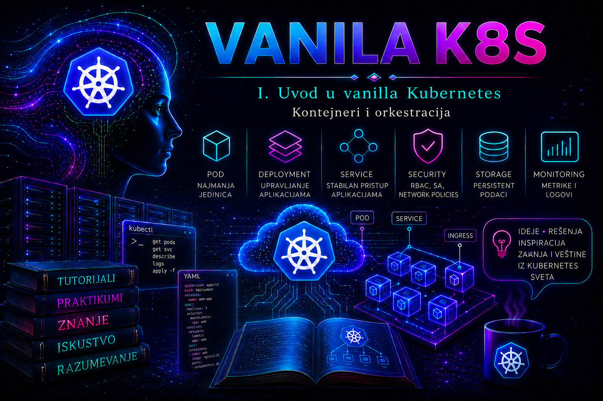

Vanilla Kubernetes

Kontejnerizacija je promenila način na koji se aplikacije pakuju, isporučuju i pokreću, ali sama po sebi nije rešila upravljanje aplikacijama u produkciji. Jedan kontejner može se jednostavno pokrenuti na računaru administratora ili na pojedinačnom serveru. Problem nastaje kada aplikacija mora da radi neprekidno, na više servera, u više instanci, sa kontrolisanim mrežnim pristupom, ograničenim resursima, proverama dostupnosti, bezbednim ažuriranjem i automatskim oporavkom posle greške.
U takvom okruženju administrator više ne upravlja samo procesom koji je pokrenut iz kontejnerske slike. On upravlja željenim stanjem celog sistema: brojem instanci aplikacije, njihovim raspoređivanjem, mrežnim identitetom, konfiguracijom, zavisnostima, dozvolama, resursima, ažuriranjima i ponašanjem u slučaju otkaza. Orkestrator kontejnera preuzima veliki deo tog operativnog posla, ali ne ukida administratorsku odgovornost. Naprotiv, zahteva preciznije deklarisanje očekivanog stanja i disciplinovanu proveru rezultata.
Od aplikacije na serveru do kontejnerskog radnog opterećenja
Tradicionalna aplikacija često se instalira direktno u operativni sistem servera. Instalacioni paket postavlja izvršne datoteke, biblioteke, konfiguracione fajlove i sistemske servise. Takav pristup može biti potpuno opravdan, ali povećava zavisnost aplikacije od konkretne verzije operativnog sistema, dostupnih biblioteka i lokalne konfiguracije. Dve aplikacije na istom serveru mogu zahtevati različite ili nekompatibilne verzije istog paketa, a svaka promena na serveru može uticati na više servisa.
Kontejnerska slika predstavlja standardizovan paket koji obuhvata aplikaciju, njene izvršne datoteke, biblioteke i deo konfiguracije potreban za pokretanje. Prema OCI modelu, slika se sastoji od konfiguracije, manifesta i slojeva fajl-sistema. Kada kompatibilni kontejnerski runtime pripremi i pokrene tu sliku, nastaje kontejner: izolovani proces ili grupa procesa koji i dalje koriste kernel operativnog sistema hosta.
Kontejner zato nije mala virtuelna mašina. Virtuelna mašina ima sopstveni gostujući operativni sistem i virtuelizovani hardver. Kontejner deli kernel hosta, ali koristi mehanizme izolacije procesa, mreže, fajl-sistema i resursa. To obično znači brže pokretanje i manji infrastrukturni trošak, ali i drugačiji bezbednosni model. Greška u konfiguraciji privilegija kontejnera može izložiti host ili druge radne procese, zbog čega kontejner ne treba automatski smatrati bezbednim samo zato što je izolovan.
Slika je nepromenljivi artefakt iz kojeg se mogu pokrenuti mnoge instance. Kontejner je konkretna pokrenuta instanca te slike. Registry je servis iz kojeg se slike preuzimaju i u koji se objavljuju. Runtime, kao što su containerd ili CRI-O, upravlja izvršavanjem kontejnera na hostu. Kubernetes komunicira sa kompatibilnim runtime-om preko Container Runtime Interface sloja i ne zahteva Docker Engine kao runtime na čvorovima.
Verzijska napomena. Aktuelna Kubernetes dokumentacija za izdanje 1.36 zahteva CRI-kompatibilan runtime. Ugrađeni dockershim uklonjen je još u Kubernetes-u 1.24. Docker se i dalje može koristiti za izgradnju OCI-kompatibilnih slika, ali to ne znači da Docker Engine neposredno izvršava Podove na čvoru. Administrator zato proverava stvarni CRI endpoint i runtime verziju čvora, a ne izvodi zaključak iz naziva alata kojim je slika napravljena.
| Sloj | Šta predstavlja | Administratorska posledica |
|---|---|---|
| OCI image | Verzionisani manifest, konfiguracija i slojevi fajl-sistema | Proveravaju se poreklo, digest, arhitektura, ranjivosti i politika distribucije. |
| OCI runtime | Niskonivojsko izvršavanje pripremljenog kontejnerskog bundle-a | Izolacija zavisi i od kernela, namespace/cgroup mehanizama i bezbednosne konfiguracije. |
| CRI runtime | Runtime servis sa kojim kubelet komunicira preko CRI-ja | Runtime mora biti instaliran i pravilno konfigurisan na svakom čvoru. |
| Kubernetes workload | API objekti koji opisuju željeno izvršavanje aplikacije | Uspešan image pull nije dokaz spremnosti, dostupnosti ni poslovne ispravnosti aplikacije. |
Šta kontejner rešava, a šta ne rešava
Kontejner omogućava da se ista verzija aplikacije doslednije prenosi između razvojnog, testnog i produkcionog okruženja. Administrator dobija jasno verzionisan artefakt, kontrolisan postupak isporuke i mogućnost da prethodnu verziju slike sačuva za povratak. Istovremeno se smanjuje potreba da se aplikacione biblioteke ručno instaliraju na svaki server.
Međutim, kontejner sam po sebi ne odgovara na operativna pitanja: ko ponovo pokreće aplikaciju kada proces prestane da radi, gde se pokreće nova instanca kada server otkaže, kako se saobraćaj usmerava samo ka zdravim instancama, kako se održava tačan broj replika, kako se nova verzija uvodi bez prekida i kako se sprečava da jedan proces potroši sve resurse hosta.
Na jednom serveru pojedine zadatke može obaviti systemd, Docker Compose ili drugi lokalni alat. Takva rešenja mogu biti dovoljna za razvojno okruženje, demonstraciju, mali interni servis ili aplikaciju kod koje je prihvatljiv ručni oporavak. Ona nisu automatski pogrešna. Kubernetes postaje opravdan kada broj aplikacija, čvorova, timova i operativnih zahteva prevaziđe ono što se bezbedno može održavati skupom lokalnih skripti i ručnih procedura.
Važna administratorska odluka zato nije samo kako pokrenuti kontejner, već da li je za konkretno radno opterećenje potreban orkestrator. Kubernetes povećava mogućnosti, ali uvodi control plane, mrežni model, skladišne zavisnosti, upravljanje identitetima, monitoring, politike i potrebu za specijalizovanim znanjem. Aplikacija koja se retko menja i pouzdano radi na jednom serveru ne mora biti premeštena u Kubernetes samo zato što je kontejnerizacija dostupna.
Zašto je potrebna orkestracija
Orkestracija znači koordinisano upravljanje životnim ciklusom kontejnerskih aplikacija na skupu računarskih resursa. Kubernetes korisniku omogućava da preko API objekata opiše željeno stanje, dok kontroleri pokušavaju da stvarno stanje približe tom opisu. Administrator ne piše proceduru koja neprekidno proverava svaki proces. On, na primer, definiše da aplikacija treba da ima tri replike, a odgovarajući kontroler održava taj broj.
Ovaj model se naziva deklarativnim. Deklaracija ne opisuje svaki pojedinačni korak koji sistem mora da izvrši, već krajnje stanje koje treba postići. Ako jedna instanca nestane, sistem ne zaključuje da je željeni broj replika promenjen. Registruje odstupanje između željenog i stvarnog stanja i pokreće zamensku instancu. Taj proces usaglašavanja naziva se reconciliation.
Reconciliation je trajna kontrolna petlja, a ne jednokratno izvršavanje skripte. API server prihvata i čuva deklarisano stanje; odgovarajući kontroler posmatra relevantne objekte, poredi željeno i zapaženo stanje i preduzima korektivne radnje. Te radnje su asinhrone, pa uspešan odgovor na kubectl apply potvrđuje da je API zahtev prihvaćen, ali ne i da je aplikacija već dostupna. Dokaz završene promene dolazi iz statusa objekata, uslova kontrolera, događaja, spremnosti Podova, endpoint-a i funkcionalnog testa.
Orkestracija je posebno važna zbog sledećih produkcionih potreba:
- Raspoređivanje: aplikacione instance moraju biti postavljene na čvorove koji imaju dovoljno procesorskih, memorijskih i drugih potrebnih resursa.
- Samoporavak: ugašeni kontejneri se ponovo pokreću, a izgubljene instance radnog opterećenja zamenjuju novim.
- Stabilan mrežni pristup: klijenti ne treba da poznaju promenljive IP adrese pojedinačnih instanci.
- Skaliranje: broj replika mora moći kontrolisano da se poveća ili smanji.
- Ažuriranje: nova verzija aplikacije treba da se uvede postepeno, uz proveru spremnosti i mogućnost povratka.
- Izolacija i upravljanje resursima: radna opterećenja moraju dobiti odgovarajuće granice, identitete i dozvole.
Orkestrator ne garantuje da je aplikacija funkcionalno ispravna. On može utvrditi da proces radi, da port prihvata vezu ili da HTTP endpoint vraća očekivani status. Ne može bez dodatne logike znati da li aplikacija izračunava tačne poslovne rezultate, da li je podatak konzistentan ili da li je spoljni poslovni servis dostupan. Granica između infrastrukturne i aplikacione odgovornosti mora zato biti dokumentovana.
Pod kao najmanja jedinica raspoređivanja
Kubernetes ne raspoređuje samostalne kontejnere kao osnovne objekte. Najmanja jedinica koju administrator kreira i kojom Kubernetes upravlja jeste Pod. Pod sadrži jedan ili više blisko povezanih kontejnera koji dele mrežni prostor i mogu deliti definisane volumene. Svi kontejneri u Podu raspoređuju se zajedno na isti čvor.
Najčešći obrazac je jedan glavni aplikacioni kontejner u Podu. Više kontejnera u istom Podu opravdano je kada oni predstavljaju jednu usko povezanu izvršnu celinu, na primer aplikaciju i pomoćni sidecar proces koji obrađuje njene lokalne podatke. Dve nezavisne aplikacije ne treba spajati u isti Pod samo da bi se smanjio broj objekata. One tada ne mogu nezavisno da se skaliraju, ažuriraju i oporavljaju.
Podovi su potrošni objekti. Njihove IP adrese, imena i mesto izvršavanja mogu se promeniti. Administrator zato ne treba da gradi trajne integracije prema pojedinačnom Podu. Kontroler radnog opterećenja kreira i zamenjuje Podove, dok Service obezbeđuje stabilniji mrežni način pristupa grupi odgovarajućih Podova.
Direktno kreiranje samostalnog Poda korisno je za kratke testove i dijagnostiku, ali nije preporučen model za dugotrajnu aplikaciju. Ako se takav Pod obriše, ne postoji viši kontroler koji će ga vratiti. Produkciona stateless aplikacija najčešće se pokreće preko Deployment objekta.
Ova lekcija uvodi samo operativnu vezu Pod–Deployment–Service potrebnu da bi se razumela orkestracija. Životni ciklus Poda, init kontejneri i sidecar obrazac detaljno se obrađuju u lekciji 16, Deployment i ReplicaSet u lekciji 17, a Service i EndpointSlice u lekciji 19.
Deployment, ReplicaSet i održavanje željenog stanja
Deployment deklarativno upravlja skupom replika aplikacije i njenim ažuriranjima. Deployment kreira ReplicaSet, a ReplicaSet održava potreban broj Podova. Administrator u redovnom radu uglavnom upravlja Deployment objektom, a ne ručno kreiranim ReplicaSet objektima.
Veza između Deployment-a, ReplicaSet-a i Podova zasniva se na labelama i selektorima. Labele su parovi ključa i vrednosti pridruženi objektima. Selektor Deployment-a mora odgovarati labelama u njegovom Pod šablonu. Ako se labele i selektori ne podudaraju, kontroler neće pravilno povezati radno opterećenje. Service takođe koristi selektor da pronađe Podove kojima treba prosleđivati saobraćaj.
Neusklađen selektor je jedna od najčešćih grešaka kod početnika. Aplikacioni Podovi mogu biti u stanju Running, Service može postojati, ali neće imati odgovarajuće backend endpoint-e. Administrator zato ne proverava samo postojanje objekata već i njihove odnose.
Deployment čuva istoriju promena ReplicaSet objekata u skladu sa konfiguracijom. Pri promeni Pod šablona, kao što je promena verzije slike, kreira se novi ReplicaSet i postepeno se menja odnos starih i novih Podova. Strategija RollingUpdate omogućava kontrolisanu zamenu, dok parametri maxUnavailable i maxSurge određuju koliko replika može privremeno biti nedostupno i koliko dodatnih replika može postojati tokom ažuriranja.
Rolling update nije automatska garancija rada bez prekida. Za to su potrebni dovoljan broj replika, raspoloživi resursi na čvorovima, ispravna readiness proba i aplikacija koja može paralelno da podrži staru i novu verziju. Promena šeme baze koja nije kompatibilna sa prethodnom verzijom može izazvati prekid čak i kada su Kubernetes objekti tehnički ispravni.
Service i stabilan mrežni identitet
Podovi dobijaju IP adrese iz mreže klastera, ali su te adrese vezane za životni ciklus Poda. Kada zamenski Pod nastane, može dobiti drugu adresu. Service predstavlja logičku grupu Podova i obezbeđuje stabilno DNS ime i virtuelnu adresu unutar klastera.
Service tipa ClusterIP dostupan je unutar klastera i predstavlja podrazumevani tip. NodePort otvara port na čvorovima i može biti koristan u laboratoriji, ali se u ozbiljnom produkcionom okruženju najčešće koristi iza kontrolisanog load balancer-a ili ingress/gateway sloja. LoadBalancer zavisi od integracije sa cloud ili lokalnim load balancer sistemom; njegovo deklarisanje ne znači da će spoljna adresa nastati ako infrastruktura nema odgovarajući kontroler.
Service pronalazi Podove preko label selektora. Administrator proverava i EndpointSlice objekte, jer oni pokazuju koje adrese su trenutno izabrane kao backend. Service bez endpoint-a obično ukazuje na nepodudarne labele, nepostojeće Podove ili Podove koji nisu spremni.
Provere zdravlja i razlika između procesa i dostupne aplikacije
Kubernetes podržava startup, readiness i liveness probe. Njihove uloge ne treba mešati. Startup proba štiti aplikacije kojima je potrebno duže vreme da se pokrenu. Dok ona ne uspe, liveness i readiness provere ne utiču na kontejner. Readiness proba određuje da li je Pod spreman da prima saobraćaj. Kada ne uspe, Pod ostaje pokrenut, ali se uklanja iz skupa spremnih endpoint-a. Liveness proba proverava da li kontejner treba ponovo pokrenuti.
Preagresivna liveness proba može pretvoriti kratkotrajno usporenje u restart petlju. Ako provera zavisi od udaljene baze ili drugog spoljnog servisa, njihov privremeni kvar može izazvati restart svih aplikacionih instanci i dodatno pogoršati incident. Liveness endpoint zato treba prvenstveno da potvrdi da lokalni proces može da nastavi rad. Readiness proba može obuhvatiti zavisnosti bez kojih instanca ne sme da prima saobraćaj, ali i ona mora imati pažljivo izabrane pragove.
Stanje Running znači da je Pod raspoređen i da barem jedan kontejner radi ili se pokreće. Ne znači nužno da aplikacija prihvata zahteve. Kolone READY, događaji, rezultati probe, endpoint-i Service-a i funkcionalni zahtev daju potpuniju sliku.
Resursi, planiranje kapaciteta i posledice izostavljenih ograničenja
Za svaki kontejner mogu se definisati resource requests i limits. Scheduler koristi requests pri izboru čvora. CPU limit ograničava raspoloživo procesorsko vreme, dok prekoračenje memorijskog limita može dovesti do prekida procesa zbog OOM događaja. Ako requests nisu navedeni, scheduler nema pouzdanu informaciju o potrebnom kapacitetu. Ako su nerealno visoki, Pod može ostati u stanju Pending iako aplikacija u praksi troši manje.
Limits ne treba prepisivati proizvoljno između aplikacija. Postavljaju se na osnovu merenja, testiranja i očekivanog opterećenja. Suviše nizak memorijski limit izaziva ponovljene restart-e, dok suviše nizak CPU limit može povećati odziv i uzrokovati neuspeh probe. Suviše široke granice omogućavaju jednoj aplikaciji da ugrozi druge radne procese.
Administrator razlikuje nedostatak resursa od aplikacione greške. Pod u stanju Pending sa događajem Insufficient cpu ili Insufficient memory nije isto što i kontejner u stanju CrashLoopBackOff. Prvi problem pripada raspoređivanju i kapacitetu, dok drugi obično zahteva pregled prethodnih logova, komande procesa, konfiguracije i zavisnosti.
Konfiguracija, podaci i nepromenljivost aplikacionih instanci
Kontejnerske instance treba tretirati kao zamenljive. Podaci zapisani samo u zapisivi sloj kontejnera nestaju kada se instanca zameni. Trajni poslovni podaci zato pripadaju odgovarajućem skladištu, bazi podataka ili persistent volume sistemu, u skladu sa karakterom aplikacije.
Konfiguracija koja se razlikuje između okruženja ne treba da zahteva izgradnju nove slike za svaku instalaciju. Kubernetes ConfigMap može čuvati nepoverljive konfiguracione vrednosti, dok Secret predstavlja API objekat namenjen osetljivijim vrednostima. Secret nije automatski bezbedan samo zato što nosi taj naziv. Njegova zaštita zavisi od RBAC pravila, načina enkripcije podataka u etcd-u, upravljanja ključevima, audit politike i izbegavanja prikazivanja tajni u logovima i komandnoj istoriji.
Administratorski cilj nije da se sve prenese u promenljive okruženja, već da se odvoji nepromenljivi aplikacioni artefakt od kontrolisane konfiguracije i trajnih podataka. Promena konfiguracije mora imati vlasnika, reviziju, validaciju i plan povratka kao i promena slike.
Tipični simptomi i način razmišljanja administratora
| Simptom | Verovatan sloj problema | Prva provera |
|---|---|---|
| Pod je Pending | Scheduler, resursi, affinity, taint ili volume | kubectl describe pod i događaji |
| CrashLoopBackOff | Proces, konfiguracija ili zavisnost aplikacije | Tekući i prethodni logovi kontejnera |
| Running, ali nije Ready | Readiness proba ili aplikaciona zavisnost | Opis Poda, rezultat probe i aplikacioni log |
| Service nema endpoint-e | Selektor, labele ili spremnost Podova | Service selektor, Pod labele i EndpointSlice |
| Rollout ne napreduje | Nova slika, probe, resursi ili registry | Status rollout-a i događaji novih Podova |
| OOMKilled | Memorijski limit ili curenje memorije | Prethodno stanje kontejnera i metrike memorije |
Redosled dijagnostike treba da prati zavisnosti: API objekat, kontroler, raspoređivanje, preuzimanje slike, pokretanje procesa, proba, mrežni endpoint i funkcionalni zahtev. Nasumično ponovno pokretanje Podova može privremeno promeniti simptom, ali uklanja deo dokaza i ne rešava uzrok.
Integrisani praktikum: implementacija i kontrolisano ažuriranje web aplikacije
Poslovni i tehnički kontekst. Interni DevOps tim treba da postavi stateless web servis za prikaz informativne stranice. Servis mora imati tri replike, stabilan pristup unutar klastera, definisane resurse, provere spremnosti i mogućnost kontrolisanog ažuriranja. Praktikum koristi namespace training-web, Deployment web-portal i Service web-portal.
Cilj. Administrator treba da primeni deklarativni manifest, potvrdi odnose između objekata, testira samoporavak, izvede skaliranje i rolling update, prepozna namerno izazvanu grešku i vrati aplikaciju na prethodnu ispravnu verziju.
Referentno okruženje. Postojeći vanilla Kubernetes klaster ima najmanje jedan spreman worker čvor, funkcionalan CNI dodatak, CoreDNS, pristup javnom registry-ju i administrativnu radnu stanicu sa kompatibilnim kubectl klijentom. Primer koristi slike nginx:1.27.5-alpine i nginx:1.28.0-alpine. U produkciji se slike vezuju za provereni digest ili internu kopiju u kontrolisanom registry-ju.
Preduslovi i prava pristupa. Korisnik mora imati pravo da u namespace-u training-web kreira, čita, menja i briše Deployment, ReplicaSet, Pod, Service i ConfigMap objekte, kao i da čita događaje, logove i EndpointSlice objekte. Kreiranje namespace-a obavlja cluster administrator ili korisnik sa posebno delegiranim pravom. Za ovaj scenario nisu potrebna prava izmene čvorova, cluster role objekata, storage class-a ili control plane komponenti.
-
Proveriti klijentski kontekst i dostupnost klastera.
Pre promene administrator mora potvrditi u koji klaster i pod kojim identitetom šalje zahteve. Pogrešan kontekst može dovesti do izmene produkcionog klastera umesto laboratorijskog.
Validacija: API server mora biti dostupan, najmanje jedan čvor mora imati statuskubectl config current-context kubectl cluster-info kubectl get nodes kubectl auth can-i create namespaces kubectl auth can-i create deployments.apps --namespace=training-web kubectl auth can-i create services --namespace=training-web kubectl auth can-i get pods/log --namespace=training-webReady, a autorizacione provere moraju prikazatiyesza radnje koje će konkretni korisnik obavljati. Odgovornonije razlog za korišćenje šireg naloga bez odobrenja, već za formalno delegiranje najmanjeg potrebnog skupa prava. -
Kreirati namespace i radni direktorijum.
Namespace odvaja objekte vežbe od drugih radnih opterećenja. Komanda za kreiranje namespace-a izvršava se samo ako on već ne postoji.
Validacija: namespace mora imati statusmkdir -p "$HOME/vanilla-k8s-lab/web-portal" cd "$HOME/vanilla-k8s-lab/web-portal" kubectl get namespace training-web >/dev/null 2>&1 || \ kubectl create namespace training-web kubectl get namespace training-webActive. Ako kreiranje vratiForbidden, zahtev se prosleđuje cluster administratoru; ne pokušava se zaobilaženje RBAC kontrole. -
Kreirati sadržaj stranice u ConfigMap objektu.
Konfiguracija je odvojena od kontejnerske slike, pa se ista proverena slika može koristiti sa različitim sadržajem po okruženjima.
Validacija: proverava se postojanje objekta i naziv ključa, bez nepotrebnog prikazivanja osetljivog sadržaja. Ovaj ConfigMap ne sadrži tajne.cat > index.html <<'EOF' <!doctype html> <html lang="sr"> <head><meta charset="utf-8"><title>Web portal</title></head> <body> <h1>Vanilla Kubernetes web portal</h1> <p>Verzija sadržaja: 1.0</p> </body> </html> EOF kubectl create configmap web-portal-content \ --from-file=index.html \ --namespace=training-web \ --dry-run=client -o yaml > configmap.yaml kubectl apply -f configmap.yamlkubectl get configmap web-portal-content -n training-web kubectl describe configmap web-portal-content -n training-web -
Definisati Deployment sa tri replike, resursima i probama.
Readiness proba sprečava slanje saobraćaja instanci koja još nije spremna, dok liveness proba omogućava restart kontejnera koji više ne odgovara. Resursi su namerno mali jer je reč o statičkom laboratorijskom servisu; produkcione vrednosti određuju se merenjem.
Validacija: serverski dry-run proverava manifest prema API serveru bez trajne izmene. Posle primene Deployment mora dostići tri dostupne replike.cat > deployment.yaml <<'EOF' apiVersion: apps/v1 kind: Deployment metadata: name: web-portal namespace: training-web labels: app.kubernetes.io/name: web-portal app.kubernetes.io/part-of: vanilla-k8s-training spec: replicas: 3 revisionHistoryLimit: 5 progressDeadlineSeconds: 120 strategy: type: RollingUpdate rollingUpdate: maxUnavailable: 1 maxSurge: 1 selector: matchLabels: app.kubernetes.io/name: web-portal template: metadata: labels: app.kubernetes.io/name: web-portal app.kubernetes.io/part-of: vanilla-k8s-training spec: automountServiceAccountToken: false containers: - name: nginx image: nginx:1.27.5-alpine imagePullPolicy: IfNotPresent ports: - name: http containerPort: 80 protocol: TCP resources: requests: cpu: 25m memory: 32Mi limits: cpu: 200m memory: 128Mi readinessProbe: httpGet: path: / port: http initialDelaySeconds: 2 periodSeconds: 5 timeoutSeconds: 2 failureThreshold: 3 livenessProbe: httpGet: path: / port: http initialDelaySeconds: 10 periodSeconds: 10 timeoutSeconds: 2 failureThreshold: 3 volumeMounts: - name: web-content mountPath: /usr/share/nginx/html/index.html subPath: index.html readOnly: true volumes: - name: web-content configMap: name: web-portal-content EOF kubectl apply --server-side --dry-run=server -f deployment.yaml kubectl apply -f deployment.yaml
Očekivani rezultat jekubectl rollout status deployment/web-portal \ --namespace=training-web \ --timeout=120s kubectl get deployment,replicaset,pods \ --namespace=training-web \ --selector=app.kubernetes.io/name=web-portal \ -o wide3/3spremnih replika. Ako rollout ne uspe, pre nove promene pregledaju se događaji i opis problematičnog Poda. -
Kreirati Service i proveriti njegove backend endpoint-e.
Service tipa ClusterIP obezbeđuje stabilno ime
web-portal.training-web.svcunutar klastera.
Validacija: Service mora imati dodeljen ClusterIP, a EndpointSlice treba da sadrži tri spremne adrese. Ako nema adresa, porede se Service selektor i labele Podova:cat > service.yaml <<'EOF' apiVersion: v1 kind: Service metadata: name: web-portal namespace: training-web labels: app.kubernetes.io/name: web-portal spec: type: ClusterIP selector: app.kubernetes.io/name: web-portal ports: - name: http port: 80 targetPort: http protocol: TCP EOF kubectl apply --server-side --dry-run=server -f service.yaml kubectl apply -f service.yaml kubectl get service web-portal -n training-web kubectl get endpointslice \ -n training-web \ -l kubernetes.io/service-name=web-portalkubectl get service web-portal -n training-web \ -o jsonpath='{.spec.selector}{"\n"}' kubectl get pods -n training-web \ --show-labels \ -l app.kubernetes.io/name=web-portal -
Izvršiti funkcionalni test bez izlaganja servisa van klastera.
Za administratorsku proveru koristi se privremeni Pod sa curl alatom. U produkciji se verzija dijagnostičke slike odobrava i preuzima iz kontrolisanog registry-ja.
Validacija: izlaz mora sadržati naslovkubectl run web-portal-test \ --namespace=training-web \ --image=curlimages/curl:8.12.1 \ --restart=Never \ --rm -i \ --command -- \ curl --fail --silent --show-error \ http://web-portal.training-web.svc.cluster.local/Vanilla Kubernetes web portali oznaku verzije sadržaja1.0. Neuspešan DNS upit upućuje na CoreDNS ili mrežnu konfiguraciju; uspešan DNS uz timeout zahteva proveru endpoint-a, CNI sloja i NetworkPolicy pravila. -
Testirati samoporavak brisanjem jedne aplikacione instance.
Brisanje Poda u ovom kontrolisanom scenariju nije brisanje Deployment-a. ReplicaSet treba da prepozna odstupanje i kreira zamenu.
Praćenje se prekida saPOD_TO_DELETE="$(kubectl get pods \ -n training-web \ -l app.kubernetes.io/name=web-portal \ -o jsonpath='{.items[0].metadata.name}')" kubectl delete pod "$POD_TO_DELETE" -n training-web kubectl get pods \ -n training-web \ -l app.kubernetes.io/name=web-portal \ --watchCtrl+Ckada ponovo postoje tri spremna Poda. Validacija: broj dostupnih replika mora se vratiti na tri bez ručnog kreiranja Poda. Novi Pod ima drugo ime i moguće drugu IP adresu, dok Service ostaje nepromenjen. -
Skalirati aplikaciju sa tri na pet replika.
Promena se izvodi kroz deklarativni fajl kako bi željeno stanje ostalo dokumentovano. U fajlu
deployment.yamlmenja se samo vrednostreplicas.
Validacija: Deployment mora prikazati pet dostupnih replika, a Service pet spremnih backend adresa. Ako novi Podovi ostanused -i 's/replicas: 3/replicas: 5/' deployment.yaml kubectl diff -f deployment.yaml || true kubectl apply -f deployment.yaml kubectl rollout status deployment/web-portal \ -n training-web \ --timeout=120s kubectl get deployment web-portal -n training-web kubectl get endpointslice \ -n training-web \ -l kubernetes.io/service-name=web-portalPending, proveravaju se događaji i kapacitet, a ne povećavaju se resursi klastera bez odobrenja. -
Izvesti kontrolisano ažuriranje slike.
Pre produkcione promene administrator proverava poreklo, digest, rezultate skeniranja i kompatibilnost slike. U vežbi se menja tag sa verzije 1.27.5 na 1.28.0.
Validacija: svih pet Podova mora koristiti novu sliku, imatised -i 's/nginx:1.27.5-alpine/nginx:1.28.0-alpine/' deployment.yaml kubectl diff -f deployment.yaml || true kubectl apply -f deployment.yaml kubectl rollout status deployment/web-portal \ -n training-web \ --timeout=120s kubectl get pods \ -n training-web \ -l app.kubernetes.io/name=web-portal \ -o custom-columns='NAME:.metadata.name,IMAGE:.spec.containers[0].image,READY:.status.containerStatuses[0].ready,RESTARTS:.status.containerStatuses[0].restartCount'READY=truei ne pokazivati neočekivani rast restart-a. Funkcionalni curl test iz prethodnog koraka mora i dalje biti uspešan. -
Izvesti negativni test sa nepostojećom slikom.
Ovaj korak se izvodi samo u laboratorijskom namespace-u. Cilj je da administrator prepozna zaustavljen rollout i razlikuje registry problem od greške aplikacionog procesa.
Očekivani rezultat: novi Pod ne može da preuzme sliku i prelazi u stanje kao što sukubectl set image deployment/web-portal \ nginx=registry.invalid.example/web-portal:does-not-exist \ --namespace=training-web kubectl rollout status deployment/web-portal \ --namespace=training-web \ --timeout=130s || true kubectl get pods -n training-web \ -l app.kubernetes.io/name=web-portal NEWEST_POD="$(kubectl get pods \ -n training-web \ -l app.kubernetes.io/name=web-portal \ --sort-by=.metadata.creationTimestamp \ -o name | tail -n 1)" kubectl describe pod "$NEWEST_POD" -n training-webErrImagePulliliImagePullBackOff. U događajima se vidi neuspeh razrešavanja ili pristupa registry adresi. Stare spremne replike ostaju dostupne u granicama rolling update strategije, pa administrator ne briše ispravni ReplicaSet. -
Vratiti poslednju ispravnu reviziju.
Rollback se izvršava čim se potvrdi da je nova slika neupotrebljiva i da problem nije prolazni infrastrukturni incident koji će se rešiti u okviru odobrenog vremena.
Validacija: neispravna slika više ne sme biti prisutna u aktivnim Podovima, svih pet replika mora biti spremno, EndpointSlice mora ponovo imati pet spremnih adresa, a funkcionalni HTTP zahtev mora biti uspešan. U ovom scenariju neispravna slika uneta je imperativnom komandomkubectl rollout history deployment/web-portal -n training-web kubectl rollout undo deployment/web-portal -n training-web kubectl rollout status deployment/web-portal \ -n training-web \ --timeout=120s kubectl get pods \ -n training-web \ -l app.kubernetes.io/name=web-portal \ -o custom-columns='NAME:.metadata.name,IMAGE:.spec.containers[0].image,READY:.status.containerStatuses[0].ready'kubectl set image, pa lokalnideployment.yamli dalje sadrži potvrđenu verzijunginx:1.28.0-alpine. To se proverava pre sledeće deklarativne primene:grep 'image:' deployment.yaml kubectl diff -f deployment.yaml || true -
Pregledati događaje i logove relevantne za scenario.
Kubernetes događaji opisuju odluke schedulera, kubelet-a i kontrolera, dok
kubectl logsprikazuje standardni izlaz i greške aplikacionog procesa.
Tumačenje: događaji su vremenski ograničen dijagnostički izvor i nisu zamena za centralizovan sistem logovanja. U produkciji se logovi kontejnera prikupljaju sa čvorova iz runtime lokacija preko odobrenog log agenta, a control plane i kubelet logovi pregledaju se kroz platformsku proceduru. Administrator aplikacionog namespace-a obično nema niti treba da ima direktan pristup fajl-sistemu čvorova.kubectl get events \ --namespace=training-web \ --sort-by=.metadata.creationTimestamp kubectl logs \ --namespace=training-web \ --selector=app.kubernetes.io/name=web-portal \ --prefix=true \ --tail=50 kubectl describe deployment web-portal -n training-web -
Očistiti laboratorijsko okruženje ili ga predati na dalje korišćenje.
Brisanje namespace-a uklanja sve namespaced objekte u njemu i zato je destruktivna operacija.
Upozorenje: pre izvršavanja proveriti da namespace ne sadrži tuđe objekte ili podatke koji se moraju sačuvati.
Validacija:kubectl get all,configmap -n training-web kubectl delete namespace training-web
Očekivani rezultat nakon završetka brisanja jekubectl get namespace training-webNotFound. Ako se okruženje zadržava, umesto brisanja dokumentuju se vlasnik, svrha, rok važenja, verzija manifesta i očekivana potrošnja resursa.
Merljivi kriterijumi prihvatanja.
- Deployment dostiže pet od pet dostupnih replika u roku od 120 sekundi u referentnom okruženju.
- Svaki aktivni Pod ima uspešnu readiness proveru i nema neočekivane restart-e.
- Service ima pet spremnih backend adresa u EndpointSlice objektima.
- HTTP zahtev iz privremenog Poda vraća status uspeha i očekivani sadržaj.
- Brisanje jednog Poda dovodi do automatskog formiranja zamenske replike.
- Neispravna slika izaziva prepoznatljiv
ImagePullBackOffsimptom bez ručnog brisanja ispravnih replika. - Rollback vraća sve replike na potvrđenu verziju i obnavlja uspešan funkcionalni test.
Administratorske prakse
Praćenje željenog i stvarnog broja replika. Deployment status proverava se posle svake promene, a u produkciji kontinuirano kroz monitoring. Komande kubectl get deployment i kubectl rollout status koriste se za neposrednu proveru. Reakciju zahtevaju Available replike ispod željenog broja duže od odobrenog vremena, ProgressDeadlineExceeded ili kontinuirano nedostupne replike. Prva reakcija je pregled događaja novih Podova, a ne ponovno pokretanje svih instanci. U zapis promene unose se vreme, revizija, verzija slike, trajanje rollout-a i uzrok eventualnog rollback-a. Uspešnost prakse meri se procentom promena završenih bez neplaniranog prekida i prosečnim vremenom oporavka neuspelog rollout-a.
Praćenje restart-a i razloga prekida kontejnera. Broj restart-a prati se kroz metrike i komandom kubectl get pods. Svako ponavljanje CrashLoopBackOff, OOMKilled ili iznenadni rast restart-a zahteva pregled kubectl describe pod, tekućih logova i logova prethodne instance pomoću opcije --previous. Prva reakcija je očuvanje dijagnostičkih podataka i identifikacija poslednje promene. Dokumentuju se razlog prekida, resursna potrošnja, događaji i korektivna mera. Uspeh se meri odsustvom ponovljenog simptoma tokom dogovorenog perioda posmatranja.
Kontrola slika. Pre produkcione implementacije proveravaju se izvor, digest, potpis kada je uveden, rezultati skeniranja ranjivosti i podržana arhitektura procesora. Provera se obavlja u CI/CD i registry sistemu, a Kubernetes manifest treba da koristi jednoznačno identifikovanu odobrenu sliku. Kritična ranjivost bez prihvaćenog izuzetka, nepoznato poreklo ili promenljiv tag predstavljaju razlog za zaustavljanje promene. Dokumentuju se digest, datum skeniranja, nalaz i odobrenje. Uspeh se meri procentom aktivnih radnih opterećenja koja koriste odobrene i sledive slike.
Kontrola resursa. Requests, limits i stvarna potrošnja porede se posle testa opterećenja, posle promene verzije i periodično prema politici kapaciteta. Koriste se platforma za metrike, kubectl top kada je Metrics API dostupan i istorijski dashboard-i. Dugotrajna potrošnja blizu memorijskog limita, CPU throttling koji utiče na odziv ili veliki raskorak između request-a i realne potrošnje zahtevaju analizu. Prva reakcija nije automatsko povećavanje limita, već utvrđivanje da li je promena posledica opterećenja, curenja memorije ili regresije. Rezultati se beleže u evidenciju kapaciteta i vlasničku dokumentaciju aplikacije.
Provera mrežnih odnosa. Posle promene labela, Service-a, probe ili mrežne politike proveravaju se Service selektor, Pod labele, EndpointSlice adrese i funkcionalni zahtev iz odgovarajuće mrežne zone. Service bez spremnih endpoint-a zahteva hitnu reakciju ako predstavlja produkcioni servis. Prvi korak je razlikovanje problema selektora od problema spremnosti Podova. Dokumentuju se DNS ime, portovi, vlasnik servisa, dozvoljeni izvori saobraćaja i rezultat testa.
Logovi i audit trag. Aplikacioni logovi treba da se šalju na standardni izlaz i grešku, prikupljaju centralno i čuvaju u skladu sa klasifikacijom podataka. Kubernetes audit log, kada je konfigurisan na control plane-u, koristi se za utvrđivanje ko je i kada menjao API objekte. Reakciju zahtevaju praznine u prikupljanju, neovlašćene promene, prikazivanje tajni ili nagli rast grešaka. Prvo se ograničava dalji rizik i čuvaju relevantni zapisi. Uspeh se meri mogućnošću da se za odabranu promenu povežu zahtev, izvršilac, API izmena, rollout i aplikacioni rezultat.
Čuvanje deklarativnih manifesta i oporavak. YAML fajlovi, Helm ili Kustomize izvori i pipeline konfiguracija čuvaju se u verzionisanom repozitorijumu, a ne samo na administratorskoj radnoj stanici. Za poslovne podatke backup se obavlja na nivou odgovarajuće baze ili persistent storage sistema; kopija Deployment objekta nije backup aplikacionih podataka. Integritet se proverava automatizovanom validacijom, potpisom ili checksum kontrolom i probnim vraćanjem u izolovano okruženje. Upotrebljiv backup potvrđen je tek kada se iz njega obnovi funkcionalna usluga i prođu definisani testovi podataka, pristupa i zavisnosti.
Završna kontrolna tačka
- Potvrđen je tačan
kubectlkontekst i identitet pre promene. - Komande
kubectl auth can-ipotvrđuju samo prava potrebna za planirane objekte i namespace. - Deployment selektor potpuno odgovara labelama u Pod šablonu.
- Service selektor bira očekivane Podove, a EndpointSlice sadrži spremne adrese.
- Definisani su realni CPU i memorijski requests i limits.
- Readiness i liveness probe proveravaju različite operativne uslove i imaju opravdane pragove.
- Rollout je završen komandom
kubectl rollout statusu odobrenom vremenu. - Funkcionalni HTTP test vraća očekivani status i sadržaj.
- Pregledani su događaji, restart-i i aplikacioni logovi nakon promene.
- Poznata je prethodna ispravna revizija i proveren je postupak rollback-a.
- Manifesti i zapis promene sačuvani su u odobrenom verzionisanom repozitorijumu.
- Dokumentovani su vlasnik aplikacije, kriterijumi eskalacije i granica između platformske i aplikacione odgovornosti.
Zaključak
Administrator nakon ove lekcije treba da razume zašto kontejnerska slika rešava pakovanje aplikacije, ali ne i njeno produkciono upravljanje. Orkestracija uvodi deklarativno željeno stanje, kontrolere, stabilan mrežni pristup, skaliranje, provere zdravlja i kontrolisana ažuriranja. Istovremeno uvodi nove zavisnosti i rizike: pogrešne selektore, neadekvatne probe, nerealne resursne granice, neproverene slike, preširoke dozvole i lažno očekivanje da stanje Running znači da je poslovna usluga ispravna.
Administrator treba da ume da implementira stateless aplikaciju kroz Deployment i Service, proveri ReplicaSet i Pod odnose, validira EndpointSlice objekte, testira aplikaciju iz mreže klastera, posmatra rollout i izvede bezbedan povratak na prethodnu reviziju. Mora umeti da razlikuje Pending, CrashLoopBackOff, neuspešnu readiness proveru, ImagePullBackOff i Service bez endpoint-a, jer svaki od tih simptoma upućuje na drugi sloj sistema.
Bezbedna promena podrazumeva proveru konteksta i ovlašćenja, validaciju manifesta, pregled razlike, kontrolisanu primenu, tehnički i funkcionalni test i dokumentovanje rezultata. Brisanje Podova, povećavanje resursa ili ponavljanje rollout-a bez dijagnostike nije zamena za administratorski postupak. Kubernetes može zameniti izgubljenu instancu, ali ne može samostalno ispraviti lošu aplikacionu verziju, nekompatibilnu promenu baze ili pogrešno definisanu poslovnu logiku.
Razlog za eskalaciju postoji kada problem zahteva izmene čvorova, CNI dodatka, registry infrastrukture, control plane-a, bezbednosnih politika ili poslovnih podataka izvan odobrenog domena administratora. Odgovoran administrator prepoznaje granice svog ovlašćenja, čuva dijagnostičke dokaze, jasno opisuje pogođene objekte i vreme incidenta i uključuje vlasnika odgovarajućeg sloja pre nego što lokalni problem pretvori u širi prekid usluge.